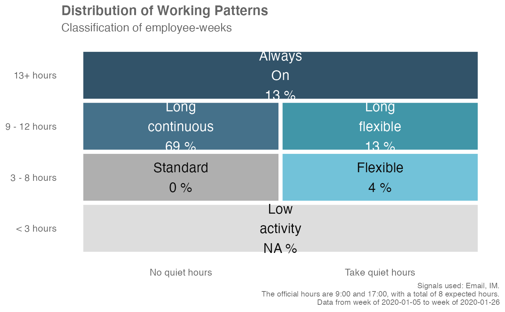
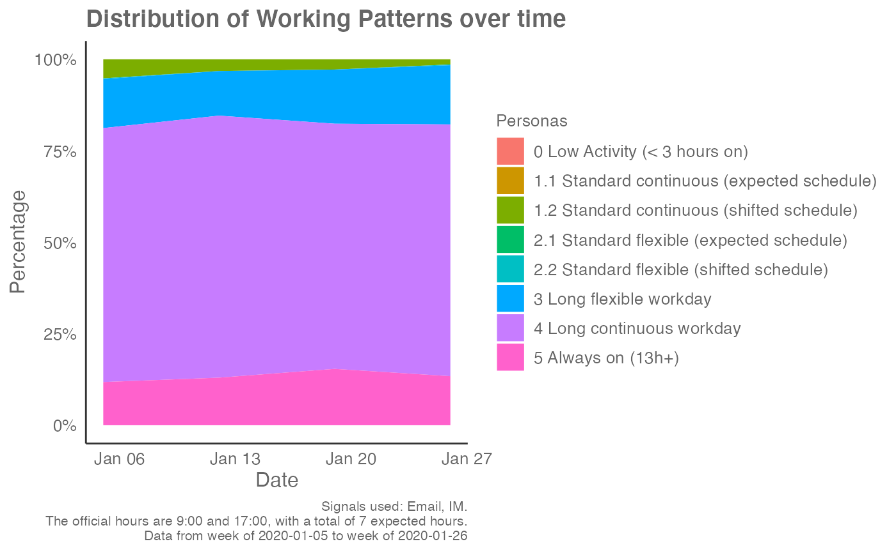
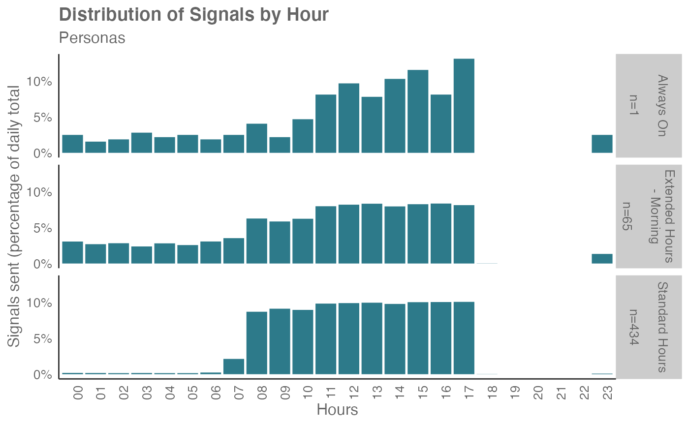
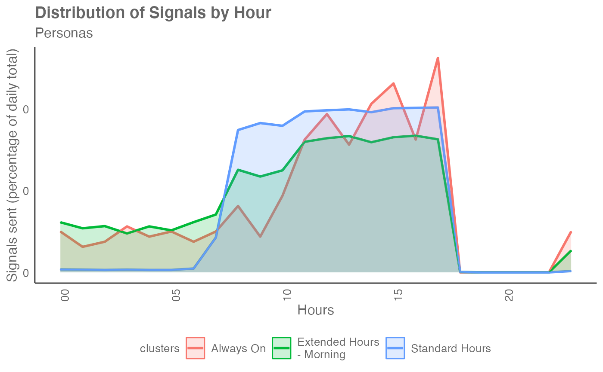

Classify working pattern personas using a rule based algorithm
Source:R/workpatterns_classify.R
workpatterns_classify.Rd![[Experimental]](figures/lifecycle-experimental.svg)
Apply a rule based algorithm to emails or instant messages sent by hour of day. Uses a binary week-based ('bw') method by default, with options to use the the person-average volume-based ('pav') method.
workpatterns_classify( data, hrvar = "Organization", values = "percent", signals = "email", start_hour = "0900", end_hour = "1700", active_threshold = 0, method = "bw", return = "plot" )
Arguments
| data | A data frame containing data from the Hourly Collaboration query. |
|---|---|
| hrvar | A string specifying the HR attribute to cut the data by. Defaults to NULL. This only affects the function when "table" is returned, and is only applicable for method = "bw". |
| values | Only valid if using |
| signals | Character vector to specify which collaboration metrics to use:
|
| start_hour | A character vector specifying starting hours, e.g. "0900". Note that this currently only supports hourly increments. |
| end_hour | A character vector specifying starting hours, e.g. "1700". Note that this currently only supports hourly increments. |
| active_threshold | A numeric value specifying the minimum number of signals to be greater than in order to qualify as active. Defaults to 0. Only applicable for the binary-week method. |
| method | String to pass through specifying which method to use for classification. By default, a binary week-based (bw) method is used, with options to use the the person-average volume-based (pav) method. |
| return | String specifying what to return. This must be one of the following strings:
See |
Value
Character vector to specify what to return. Valid options include:
"plot": returns a heatmap plot of signal distribution by hour and archetypes (default)"data": returns the raw data with the classified archetypes"table": returns a summary table of the archetypes"plot-area": returns an area plot of the percentages of archetypes shown over time"plot-hrvar": returns a bar plot showing the count of archetypes, faceted by the supplied HR attribute. This is only available for thebwmethod.
Details
This is a wrapper around workpatterns_classify_bw() and
workpatterns_classify_pav(), and calls each function depending on what is
supplied to the method argument. Both methods implement a rule-based
classification of either person-weeks or persons that pull apart
different working patterns.
See individual sections below for details on the two different implementations.
Binary Week method
This method classifies each person-week into one of the seven archetypes:
0 < 3 hours on: fewer than 3 hours of active hours
1 Standard with breaks workday: active for fewer than expected hours, with no activity outside working hours
2 Standard continuous workday: number of active hours equal expected hours, with no activity outside working hours
3 Standard flexible workday: number of active hours are less than or equal to expected hours, with some activity outside working hours
4 Long flexible workday: number of active hours exceed expected hours, with breaks occurring throughout
5 Long continuous workday: number of active hours exceed expected hours, with activity happening in a continuous block (no breaks)
6 Always on (13h+): number of active hours greater than or equal to 13
This is the recommended method over pav for several reasons:
bwignores volume effects, where activity volume can still bias the results towards the 'standard working hours'.It captures the intuition that each individual can have 'light' and 'heavy' weeks with respect to workload.
Person Average method
This method classifies each person (based on unique PersonId) into
one of the six archetypes:
Absent: Fewer than 10 signals over the week.
Extended Hours - Morning: 15%+ of collaboration before start hours and less than 70% within standard hours, and less than 15% of collaboration after end hours
Extended Hours - Evening: Less than 15% of collaboration before start hours and less than 70% within standard hours, and 15%+ of collaboration after end hours
Overnight workers: less than 30% of collaboration happens within standard hours
Standard Hours: over 70% of collaboration within standard hours
Always On: over 15% of collaboration happens before starting hour and end hour (both conditions must satisfy) and less than 70% of collaboration within standard hours
Flexibility Index
The Working Patterns archetypes as calculated
using the binary-week method shares many similarities with the Flexibility
Index (see flex_index()):
Both are computed directly from the Hourly Collaboration Flexible Query.
Both apply the same binary conversion of activity on the signals from the Hourly Collaboration Flexible Query.
See also
Other Clustering:
personas_hclust(),
workpatterns_hclust()
Other Working Patterns:
flex_index(),
identify_shifts_wp(),
identify_shifts(),
plot_flex_index(),
workpatterns_area(),
workpatterns_classify_bw(),
workpatterns_classify_pav(),
workpatterns_hclust(),
workpatterns_rank(),
workpatterns_report()
Author
Ainize Cidoncha ainize.cidoncha@microsoft.com
Examples
# Returns a plot by default em_data %>% workpatterns_classify(method = "bw")# Return an area plot em_data %>% workpatterns_classify(method = "bw", return = "plot-area")# \donttest{ em_data %>% workpatterns_classify(method = "bw", return = "table")#> # A tibble: 6 x 5 #> Personas `Team 1` `Team 2` `Team 3` `Team 4` #> <fct> <dbl> <dbl> <dbl> <dbl> #> 1 0 < 3 hours on 0.197 0.128 0.187 0.167 #> 2 1 Standard with breaks workday 0.0483 0.0444 0.0724 0.0279 #> 3 3 Standard flexible workday 0.364 0.281 0.284 0.265 #> 4 4 Long flexible workday 0.119 0.219 0.242 0.265 #> 5 5 Long continuous workday 0.0260 0.114 0.0724 0.0696 #> 6 6 Always on (13h+) 0.245 0.214 0.142 0.206em_data %>% workpatterns_classify(method = "pav")em_data %>% workpatterns_classify(method = "pav", return = "plot-area")# }